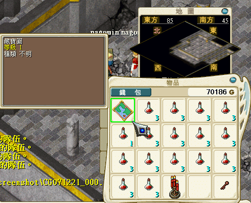

因果応報
ブメスキル（因果応報）取りの為のクエストです。
そのうちクエストマップ作りますｏｒｚ
日本版にあったようなワープポイントはこちらでは存在してないようです。
１、１Ｆ→５０Ｆへキューブを使って上ります。
２、５１Ｆ→５２Ｆへは地道に登ります。（ワープポイントはない？）
３、塔５２Ｆ(101，64)にいるナリミに話します。
４、「ＹＥＳ」と答えると赤い蝋燭（紅色蝋燭）がもらえます。（１キャラで１つずつ持つように！）
５、５４Ｆまで上り、宝の地図を取得します。（１キャラ１つずつ必要）

６、５２Ｆ(101，64)にいるナリミに話すとスキル部屋に入れます。
ＮＰＣからスキル「因果応報」を取得できます。（取得費用6000G）